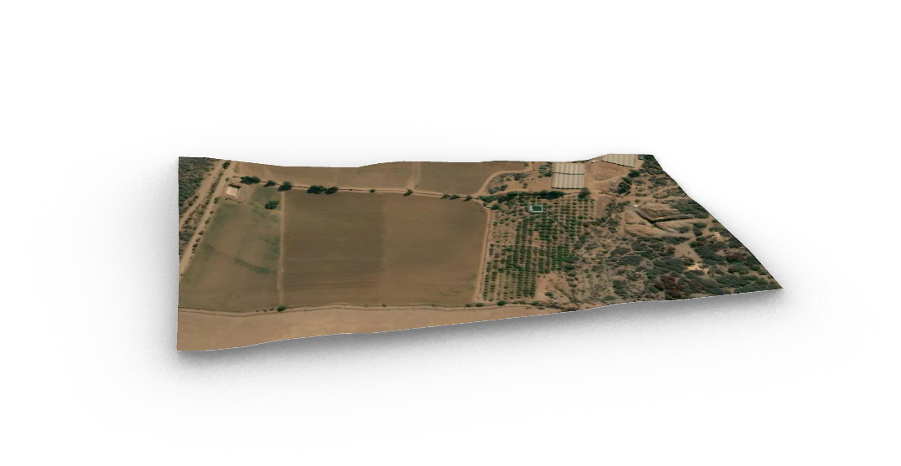

5 - Modelos
Para este quinto encargo exhibimos el avance de modelación realizada.
Iframes
El primer modelo es el sensor que ocuparemos, la visualización es el formato individual, pudiendo observar cada una de las partes que lo compone.
El segundo modelo es el sistema en el cual trabajaremos el palto, esto es visualizado de manera modular.
Finalmente, el último modelo representa el terreno en el cual nos centraremos dentro de la comunidad de Petorca.
